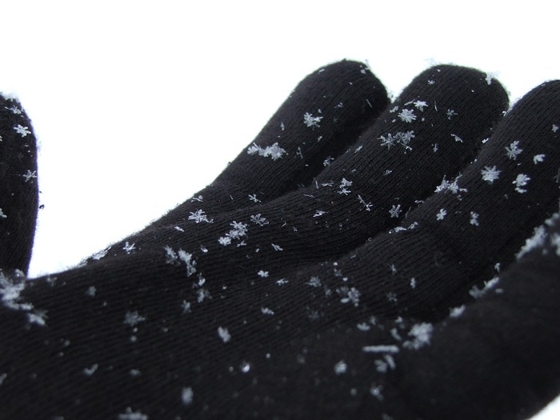

Next Photo
-
Vote
Catching Fleeting Snowflakes
A close up of the snowflakes that attached them selfs to my glove during the first snow of the season. The monochromatic overtone of the photo leads you to notice more of the textures of the glove and shapes of the snowflakes. View larger for more detail. It is amazing how each snowflake actually has it's own shape. I had not realized this until I saw it with my own eyes. The snowflakes crystalline structures can actually be seen in this picture, which makes it amazing.
These did not stick around for very long, as my warmth caused them to melt, but the photo catches their unique beauty. It reminds me of that winter every time i see the photo. The flakes actually look similar to those you would make out of paper during winter, and the ones people draw. Before seeing this I thought that the illustrations of flakes were simply exaggerations, but they really are that beautiful in real life.
More...
ID: 11
Title: Catching Fleeting Snowflakes
Description: A close up of the snowflakes that attached them selfs to my glove during the first snow of the season. The monochromatic overtone of the photo leads you to notice more of the textures of the glove and shapes of the snowflakes. View larger for more detail. It is amazing how each snowflake actually has it's own shape. I had not realized this until I saw it with my own eyes. The snowflakes crystalline structures can actually be seen in this picture, which makes it amazing.
These did not stick around for very long, as my warmth caused them to melt, but the photo catches their unique beauty. It reminds me of that winter every time i see the photo. The flakes actually look similar to those you would make out of paper during winter, and the ones people draw. Before seeing this I thought that the illustrations of flakes were simply exaggerations, but they really are that beautiful in real life.
Keywords: snow glove macro snowflake crystal crystalline unique amazing snow winter
Hidden: n
Date added: 2010-08-25 03:57:43 UTC
Date taken: 2005-12-08 08:58:00 UTC
Camera: FUJIFILM.FinePix S5100 .
Resolution: 2272x1704
Mode:
Shutter speed: 801/100
Flash: 16
Exposure time: 10/2500
Iso: 100
Metering: 5
Aperture: 320/100
Focal length: 1200/100
Artist: NathanielGuy Mahieu
Copyright: 2006 NathanielGuy Mahieu
Views: 3614